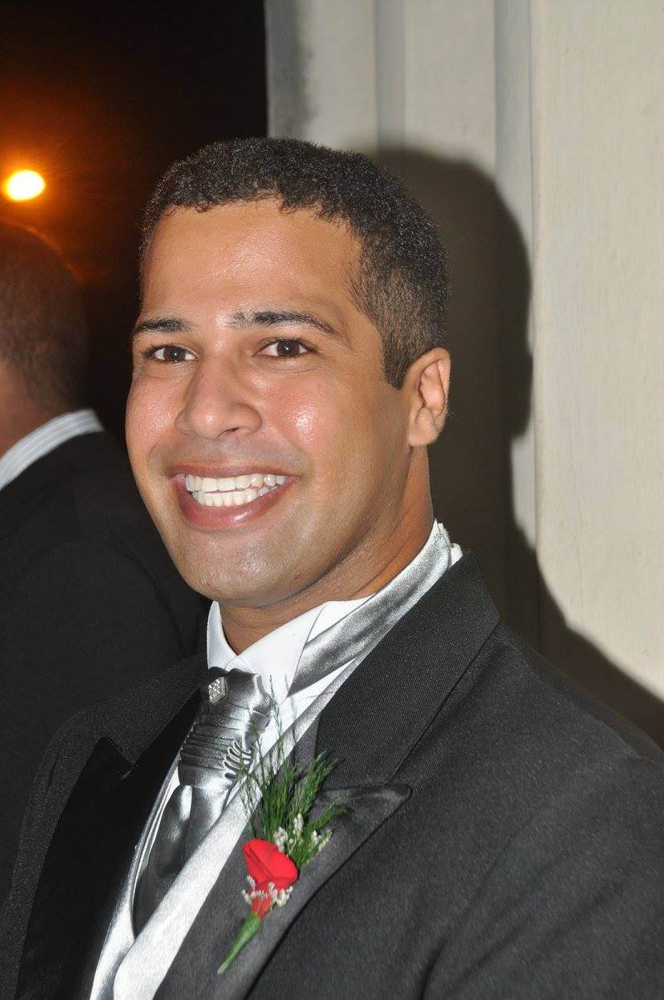
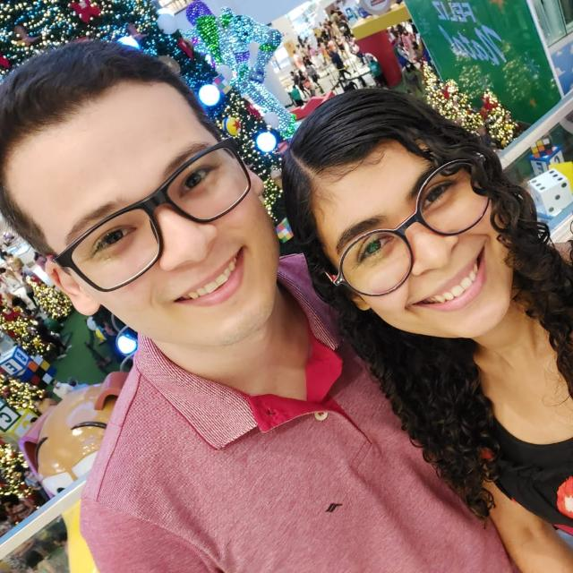
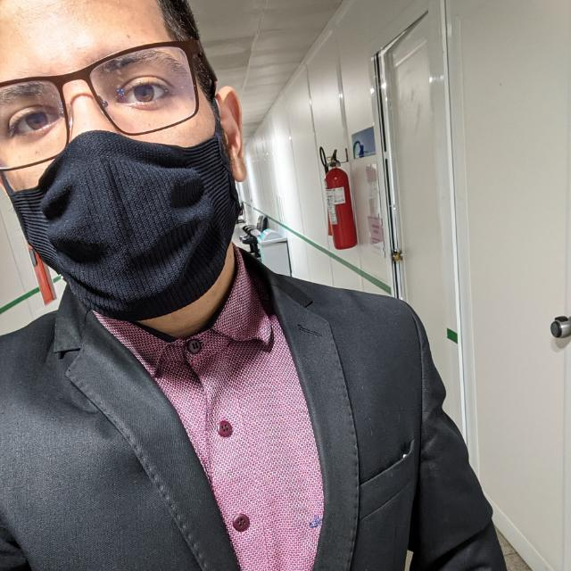
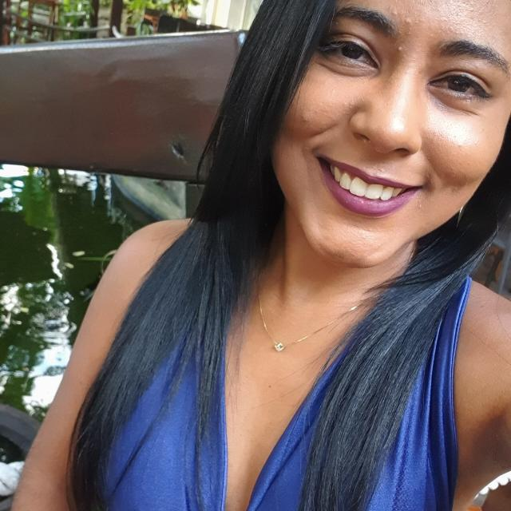

<ion-header [translucent]="true">
  <ion-toolbar>
    <ion-title>
      Sobre
    </ion-title>
  </ion-toolbar>
</ion-header>

<ion-content [fullscreen]="true">
  <ion-header collapse="condense">
    <ion-toolbar>
      <ion-title size="large">Sobre o aplicativo</ion-title>
    </ion-toolbar>
  </ion-header>
  <ion-card>
    <ion-card-header>
    <ion-img src="../../assets/img/images.jpg"></ion-img>
    <ion-card-title>Urna Eletrônica</ion-card-title>
    <ion-card-subtitle>Eleições 2022</ion-card-subtitle>
  </ion-card-header>

  <ion-card-content>
    Este aplicativo foi desenvolvido por:
    <ion-list>
      <ion-item>
      <ion-avatar slot="start">
        
      </ion-avatar>
      <ion-label>Albert França</ion-label>
    </ion-item>
    <ion-item>
      <ion-avatar slot="start">
        
      </ion-avatar>
      <ion-label>Luan Danrley</ion-label>
    </ion-item>
    <ion-item>
      <ion-avatar slot="start">
        
      </ion-avatar>
      <ion-label>Bruno Anderson</ion-label>
    </ion-item>
    <ion-item>
      <ion-avatar slot="start">
        
      </ion-avatar>
      <ion-label>Felipe Moreira</ion-label>
    </ion-item>
    <ion-item>
      <ion-avatar slot="start">
        
      </ion-avatar>
      <ion-label>Rayza Lima</ion-label>
    </ion-item>
    </ion-list>
  </ion-card-content>
  </ion-card>

  <!-- <app-explore-container name="Tab 3 page"></app-explore-container> -->
</ion-content>
